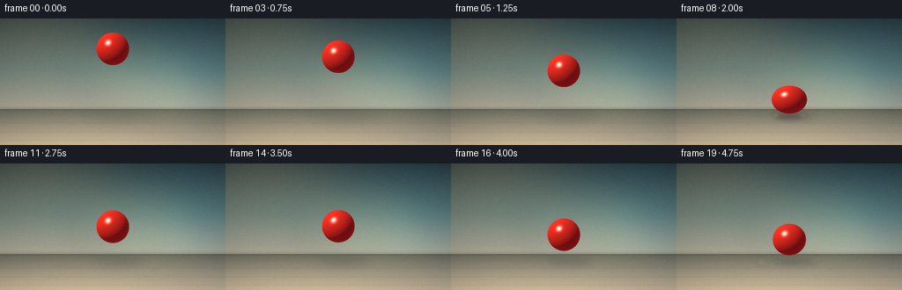
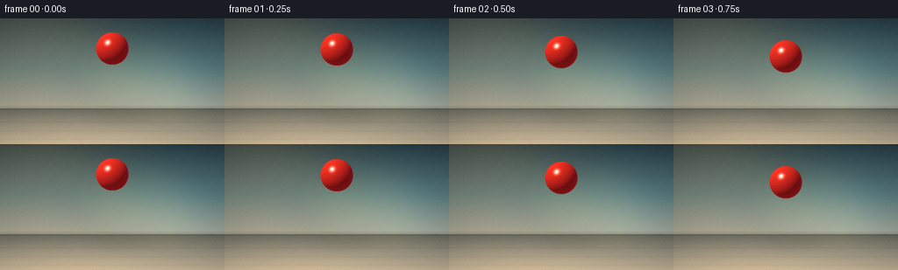
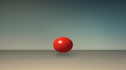

CODING AGENTS AS PIXEL WORLD MODELS
traex/DeepSeek-V4.1-Flash · instance_preservation_0023
点击播放 · 原生 RGB 像素
逐轮保存的候选
回放视频、检查图与代码变化。
每份候选均可单独播放。实际图片检查记录在下方工具轨迹中。
候选 01播放与检查图
点击播放 · 原生 RGB 像素

展开代码变化
--- 上一保存版本
+++ 本次保存版本
@@ -0,0 +1,349 @@
+from pathlib import Path
+import math
+
+import numpy as np
+from PIL import Image, ImageDraw, ImageFilter
+
+import artifact_io
+
+
+W, H = 256, 144
+FPS = 4
+FRAMES = 20
+SS = 4
+SW, SH = W * SS, H * SS
+
+BALL_X = 128.0
+BALL_R = 18.5
+GROUND_Y = 112.0
+GROUND_CENTER = GROUND_Y - BALL_R
+START_CENTER = 34.5
+GRAVITY = 32.0
+RESTITUTION = 0.64
+
+
+def lerp(a, b, t):
+ return a + (b - a) * t
+
+
+def smoothstep(edge0, edge1, x):
+ t = np.clip((x - edge0) / (edge1 - edge0), 0.0, 1.0)
+ return t * t * (3.0 - 2.0 * t)
+
+
+def rgb_gradient(colors, stops, values):
+ colors = np.asarray(colors, dtype=np.float32)
+ stops = np.asarray(stops, dtype=np.float32)
+ out = np.empty(values.shape + (3,), dtype=np.float32)
+ for channel in range(3):
+ out[..., channel] = np.interp(values, stops, colors[:, channel])
+ return out
+
+
+def build_background():
+ yy, xx = np.mgrid[0:SH, 0:SW].astype(np.float32)
+ horizon = 103.0 * SS
+ wall = yy < horizon
+
+ wall_t = np.clip(yy / horizon, 0.0, 1.0)
+ wall_rgb = rgb_gradient(
+ [(42, 57, 63), (91, 111, 111), (161, 157, 142)],
+ [0.0, 0.56, 1.0],
+ wall_t,
+ )
+
+ # Broad, soft studio light from the upper left.
+ key = np.exp(
+ -(((xx - 0.13 * SW) / (0.42 * SW)) ** 2
+ + ((yy - 0.04 * SH) / (0.62 * SH)) ** 2)
+ )
+ wall_rgb += key[..., None] * np.array([31, 24, 12], dtype=np.float32)
+ cool = np.exp(
+ -(((xx - 0.83 * SW) / (0.36 * SW)) ** 2
+ + ((yy - 0.45 * SH) / (0.55 * SH)) ** 2)
+ )
+ wall_rgb += cool[..., None] * np.array([-3, 10, 14], dtype=np.float32)
+
+ floor_t = np.clip((yy - horizon) / (SH - horizon), 0.0, 1.0)
+ floor_rgb = rgb_gradient(
+ [(95, 99, 91), (143, 139, 125), (190, 176, 150)],
+ [0.0, 0.48, 1.0],
+ floor_t,
+ )
+ floor_light = np.exp(
+ -(((xx - 0.24 * SW) / (0.55 * SW)) ** 2
+ + ((yy - 1.02 * SH) / (0.45 * SH)) ** 2)
+ )
+ floor_rgb += floor_light[..., None] * np.array([18, 12, 5], dtype=np.float32)
+
+ image = np.where(wall[..., None], wall_rgb, floor_rgb)
+
+ # A diffused diagonal shaft of light across the wall.
+ shaft_mask = (
+ (xx > 0.02 * SW)
+ & (yy < horizon)
+ & (yy > 0.29 * SH)
+ & (xx < 0.67 * SW + (yy / SH) * 0.34 * SW)
+ & (xx > 0.17 * SW + (yy / SH) * 0.52 * SW)
+ ).astype(np.float32)
+ shaft = Image.fromarray((shaft_mask * 255).astype(np.uint8))
+ shaft = shaft.filter(ImageFilter.GaussianBlur(18 * SS))
+ shaft_alpha = np.asarray(shaft, dtype=np.float32)[..., None] / 255.0
+ image += shaft_alpha * np.array([22, 18, 8], dtype=np.float32)
+
+ base = Image.fromarray(np.clip(image, 0, 255).astype(np.uint8), "RGB")
+ overlay = Image.new("RGBA", base.size, (0, 0, 0, 0))
+ draw = ImageDraw.Draw(overlay)
+
+ # Restrained floor seams establish depth without competing with the ball.
+ vanish = (BALL_X * SS, horizon)
+ for floor_x in (-72, 22, 234, 328):
+ draw.line(
+ [vanish, (floor_x * SS, SH)],
+ fill=(236, 226, 204, 18),
+ width=max(1, SS // 2),
+ )
+ for y in (0.38, 0.63, 0.86):
+ py = int(horizon + (SH - horizon) * y)
+ draw.line([(0, py), (SW, py)], fill=(48, 45, 39, 15), width=SS)
+
+ # Wall/floor junction gets a soft contact band.
+ draw.rectangle(
+ [0, int(horizon - 2.5 * SS), SW, int(horizon + 1.2 * SS)],
+ fill=(34, 38, 36, 28),
+ )
+ overlay = overlay.filter(ImageFilter.GaussianBlur(0.7 * SS))
+ base = Image.alpha_composite(base.convert("RGBA"), overlay).convert("RGB")
+
+ # Gentle vignette, strongest in the upper corners.
+ nx = (xx - SW / 2) / (SW / 2)
+ ny = (yy - SH / 2) / (SH / 2)
+ vignette = 1.0 - 0.13 * np.clip((nx * nx * 0.62 + ny * ny * 0.38) - 0.24, 0, 1)
+ return np.asarray(base, dtype=np.float32) * vignette[..., None]
+
+
+def trajectory(t):
+ fall_distance = GROUND_CENTER - START_CENTER
+ hit_time = math.sqrt(2.0 * fall_distance / GRAVITY)
+ impact_speed = GRAVITY * hit_time
+ first_duration = 2.0 * RESTITUTION * impact_speed / GRAVITY
+ first_impact = hit_time
+ second_impact = hit_time + first_duration
+
+ if t < hit_time:
+ height = fall_distance - 0.5 * GRAVITY * t * t
+ velocity = GRAVITY * t
+ elif t < second_impact:
+ dt = t - hit_time
+ velocity = RESTITUTION * impact_speed - GRAVITY * dt
+ height = max(0.0, RESTITUTION * impact_speed * dt - 0.5 * GRAVITY * dt * dt)
+ else:
+ dt = t - second_impact
+ speed2 = RESTITUTION * RESTITUTION * impact_speed
+ velocity = speed2 - GRAVITY * dt
+ height = max(0.0, speed2 * dt - 0.5 * GRAVITY * dt * dt)
+
+ y = GROUND_CENTER - height
+ contact = math.exp(-((height / 5.2) ** 2))
+ return y, velocity, height, contact, hit_time, second_impact
+
+
+def add_ball_shadow(image, center_y, height, contact):
+ layer = Image.new("RGBA", (SW, SH), (0, 0, 0, 0))
+ draw = ImageDraw.Draw(layer)
+ height_t = np.clip(height / (GROUND_CENTER - START_CENTER), 0.0, 1.0)
+ half_w = BALL_R * (1.18 + 0.72 * height_t)
+ half_h = BALL_R * (0.22 + 0.08 * height_t)
+ shadow_x = BALL_X + 5.0 + 8.0 * height_t
+ alpha = int(91 - 40 * height_t)
+ draw.ellipse(
+ [
+ (shadow_x - half_w) * SS,
+ (GROUND_Y - half_h) * SS,
+ (shadow_x + half_w) * SS,
+ (GROUND_Y + half_h) * SS,
+ ],
+ fill=(25, 26, 24, alpha),
+ )
+ layer = layer.filter(ImageFilter.GaussianBlur((3.3 + 4.2 * height_t) * SS))
+ shadow = np.asarray(layer, dtype=np.float32) / 255.0
+ shadow_alpha = shadow[..., 3:4]
+ image *= 1.0 - shadow_alpha * np.array([0.38, 0.34, 0.28], dtype=np.float32)
+
+ # Tight ambient occlusion where the sphere meets the floor.
+ if contact > 0.01:
+ ao = Image.new("RGBA", (SW, SH), (0, 0, 0, 0))
+ ao_draw = ImageDraw.Draw(ao)
+ ao_draw.ellipse(
+ [
+ (BALL_X - BALL_R * 0.78) * SS,
+ (GROUND_Y - 2.8) * SS,
+ (BALL_X + BALL_R * 0.78) * SS,
+ (GROUND_Y + 2.8) * SS,
+ ],
+ fill=(20, 19, 17, int(130 * contact)),
+ )
+ ao = ao.filter(ImageFilter.GaussianBlur(2.2 * SS))
+ ao_arr = np.asarray(ao, dtype=np.float32) / 255.0
+ image *= 1.0 - ao_arr[..., 3:4] * 0.55
+ return image
+
+
+def add_motion_trail(image, t, center_y):
+ if t < 0.04:
+ return image
+ layer = Image.new("RGBA", (SW, SH), (0, 0, 0, 0))
+ draw = ImageDraw.Draw(layer)
+ for age, alpha in ((0.055, 30), (0.105, 19), (0.155, 10)):
+ py, _, _, _, _, _ = trajectory(max(0.0, t - age))
+ radius = BALL_R * (0.90 + age * 0.20)
+ draw.ellipse(
+ [
+ (BALL_X - radius) * SS,
+ (py - radius) * SS,
+ (BALL_X + radius) * SS,
+ (py + radius) * SS,
+ ],
+ fill=(177, 30, 28, alpha),
+ )
+ layer = layer.filter(ImageFilter.GaussianBlur(2.3 * SS))
+ ghost = np.asarray(layer, dtype=np.float32) / 255.0
+ a = ghost[..., 3:4]
+ image = image * (1.0 - a) + ghost[..., :3] * 255.0 * a
+ return image
+
+
+def add_impact_effects(image, t, hit_time, second_impact):
+ result = image.copy()
+ for impact_index, impact_time in enumerate((hit_time, second_impact)):
+ age = t - impact_time
+ if not (0.0 <= age <= 0.88):
+ continue
+ fade = math.exp(-age * 3.3)
+ layer = Image.new("RGBA", (SW, SH), (0, 0, 0, 0))
+ draw = ImageDraw.Draw(layer)
+ rng = np.random.default_rng(410 + impact_index * 19)
+ particle_count = 15 if impact_index == 0 else 10
+ for i in range(particle_count):
+ side = -1 if i % 2 == 0 else 1
+ speed = 27 + 43 * rng.random()
+ rise = 4 + 12 * rng.random()
+ px = BALL_X + side * (BALL_R * 0.58 + speed * age)
+ py = GROUND_Y - 1.5 - rise * age + 31.0 * age * age
+ py += (rng.random() - 0.5) * 2.2
+ size = (1.15 + 1.65 * rng.random()) * (1.0 + age * 1.15)
+ alpha = int(np.clip(112 * fade * (0.70 + 0.30 * rng.random()), 0, 255))
+ draw.ellipse(
+ [
+ (px - size) * SS,
+ (py - size * 0.72) * SS,
+ (px + size) * SS,
+ (py + size * 0.72) * SS,
+ ],
+ fill=(224, 205, 172, alpha),
+ )
+
+ ring_w = 7.0 * fade
+ if ring_w > 0.35:
+ draw.ellipse(
+ [
+ (BALL_X - (BALL_R + 8 * age)) * SS,
+ (GROUND_Y - (2.2 + 2.7 * age)) * SS,
+ (BALL_X + (BALL_R + 8 * age)) * SS,
+ (GROUND_Y + (2.2 + 2.7 * age)) * SS,
+ ],
+ outline=(239, 218, 181, int(42 * fade)),
+ width=max(1, int(ring_w / 2)),
+ )
+
+ layer = layer.filter(ImageFilter.GaussianBlur(2.0 * SS))
+ dust = np.asarray(layer, dtype=np.float32) / 255.0
+ a = dust[..., 3:4]
+ result = result * (1.0 - a) + dust[..., :3] * 255.0 * a
+ return result
+
+
+def add_ball(image, center_y, contact):
+ squash_y = 1.0 - 0.19 * contact
+ squash_x = 1.0 + 0.12 * contact
+ center_y = center_y + contact * BALL_R * (1.0 - squash_y)
+ rx = BALL_R * squash_x * SS
+ ry = BALL_R * squash_y * SS
+ cx = BALL_X * SS
+ cy = center_y * SS
+
+ pad = int(BALL_R * SS * 1.45)
+ x0 = max(0, int(cx) - pad)
+ x1 = min(SW, int(cx) + pad + 1)
+ y0 = max(0, int(cy) - pad)
+ y1 = min(SH, int(cy) + pad + 1)
+ yy, xx = np.mgrid[y0:y1, x0:x1].astype(np.float32)
+ xn = (xx - cx) / rx
+ yn = (yy - cy) / ry
+ radial = xn * xn + yn * yn
+ inside = radial <= 1.0
+ nz = np.sqrt(np.clip(1.0 - radial, 0.0, 1.0))
+
+ light = np.array([-0.52, -0.67, 0.53], dtype=np.float32)
+ light /= np.linalg.norm(light)
+ diffuse = np.clip(xn * light[0] + yn * light[1] + nz * light[2], 0.0, 1.0)
+ half_vec = light + np.array([0.0, 0.0, 1.0], dtype=np.float32)
+ half_vec /= np.linalg.norm(half_vec)
+ specular = np.clip(
+ xn * half_vec[0] + yn * half_vec[1] + nz * half_vec[2], 0.0, 1.0
+ ) ** 74
+
+ deep = np.array([76, 8, 16], dtype=np.float32)
+ bright = np.array([242, 53, 38], dtype=np.float32)
+ shade = 0.17 + 0.83 * np.power(diffuse, 0.82)
+ rgb = deep + (bright - deep) * shade[..., None]
+
+ # Warm floor bounce and cool sky fill keep the shadow side dimensional.
+ floor_fill = np.clip((yn * 0.42 + 0.38), 0.0, 1.0) * (1.0 - diffuse) * 0.20
+ rgb += floor_fill[..., None] * np.array([38, 19, 5], dtype=np.float32)
+ sky_fill = np.clip(0.62 - yn * 0.34, 0.0, 1.0) * (1.0 - diffuse) * 0.08
+ rgb += sky_fill[..., None] * np.array([2, 17, 24], dtype=np.float32)
+
+ rim = np.power(1.0 - nz, 2.2) * 0.34
+ rgb += rim[..., None] * np.array([104, 25, 22], dtype=np.float32)
+ rgb += specular[..., None] * np.array([255, 242, 219], dtype=np.float32)
+
+ texture = 1.0 + 0.012 * np.sin(xx * 1.73 + yy * 2.31)
+ rgb *= texture[..., None]
+ alpha = inside.astype(np.float32)[..., None]
+
+ region = image[y0:y1, x0:x1]
+ region[:] = region * (1.0 - alpha) + np.clip(rgb, 0, 255) * alpha
+ return image
+
+
+def render_frame(t, background, grain):
+ image = background.copy()
+ center_y, velocity, height, contact, hit_time, second_impact = trajectory(t)
+ image = add_ball_shadow(image, center_y, height, contact)
+ image = add_impact_effects(image, t, hit_time, second_impact)
+ image = add_motion_trail(image, t, center_y)
+ image = add_ball(image, center_y, contact)
+
+ frame = Image.fromarray(np.clip(image, 0, 255).astype(np.uint8), "RGB")
+ frame = frame.resize((W, H), Image.Resampling.LANCZOS)
+ arr = np.asarray(frame, dtype=np.float32)
+ arr = (arr - 127.5) * 1.035 + 127.5
+ arr += grain
+ return np.clip(arr, 0, 255).astype(np.uint8)
+
+
+def main():
+ case_dir = Path(__file__).resolve().parent
+ background = build_background()
+ rng = np.random.default_rng(20261110)
+ grain = rng.normal(0.0, 1.15, (H, W, 1)).astype(np.float32)
+ frames = [
+ render_frame(i / FPS, background, grain)
+ for i in range(FRAMES)
+ ]
+ artifact_io.save(frames, case_dir)
+
+
+if __name__ == "__main__":
+ main()
候选 02播放与检查图
点击播放 · 原生 RGB 像素


展开代码变化
--- 上一保存版本
+++ 本次保存版本
@@ -91,7 +91,7 @@
shaft_alpha = np.asarray(shaft, dtype=np.float32)[..., None] / 255.0
image += shaft_alpha * np.array([22, 18, 8], dtype=np.float32)
- base = Image.fromarray(np.clip(image, 0, 255).astype(np.uint8), "RGB")
+ base = Image.fromarray(np.clip(image, 0, 255).astype(np.uint8))
overlay = Image.new("RGBA", base.size, (0, 0, 0, 0))
draw = ImageDraw.Draw(overlay)
@@ -325,7 +325,7 @@
image = add_motion_trail(image, t, center_y)
image = add_ball(image, center_y, contact)
- frame = Image.fromarray(np.clip(image, 0, 255).astype(np.uint8), "RGB")
+ frame = Image.fromarray(np.clip(image, 0, 255).astype(np.uint8))
frame = frame.resize((W, H), Image.Resampling.LANCZOS)
arr = np.asarray(frame, dtype=np.float32)
arr = (arr - 127.5) * 1.035 + 127.5
可观测工具轨迹
实际执行的命令与返回图片。
命令 1exit 0
/bin/bash -c "pwd && rg --files -g 'prompt.txt' -g 'GENERATION_RULES.md' -g 'task_spec.json' -g '"'!node_modules'"'"
命令 2exit 0
/bin/bash -c "ls -la && find . -maxdepth 2 -type f | sed 's#"'^./##'"' | sort | head -200"
命令 3exit 0
/bin/bash -c 'command -v ffmpeg; command -v ffprobe; command -v python3; command -v convert; command -v blender; command -v chromium; command -v node; command -v npx'
命令 4exit 0
/bin/bash -c 'cat prompt.txt'
命令 5exit 0
/bin/bash -c 'cat GENERATION_RULES.md'
命令 6exit 0
/bin/bash -c 'cat task_spec.json'
命令 7exit 0
/bin/bash -c "sed -n '1,240p' artifact_io.py && sed -n '1,220p' player_template.html"
命令 8exit 0
/bin/bash -c "python3 - <<'PY'
import numpy, PIL
print('numpy', numpy.__version__)
print('PIL', PIL.__version__)
PY"命令 9exit 0
/bin/bash -c 'python3 generate.py'
命令 10exit 0
/bin/bash -c "python3 - <<'PY'
from PIL import Image
import numpy as np
for i in range(20):
a=np.asarray(Image.open(f'frames/{i:02d}.png'))
m=(a[:,:,0]>120)&(a[:,:,0]>a[:,:,1]*2)&(a[:,:,0]>a[:,:,2]*1.5)
ys,xs=np.where(m)
print(i, len(ys), (round(ys.mean(),1), ys.min(), ys.max()) if len(ys) else None)
PY"命令 11exit 0
/bin/bash -c "python3 generate.py && python3 - <<'PY'
from pathlib import Path
import json
import numpy as np
from PIL import Image
spec=json.loads(Path('task_spec.json').read_text())
frames=sorted(Path('frames').glob('*.png'))
assert len(frames)==spec['frames']==20
first=Image.open(frames[0])
assert first.size==(spec['width'],spec['height']) and first.mode=='RGB'
with np.load('pixels.npz') as z:
assert z['pixels'].shape==(144,256,20)
assert z['pixels'].dtype==np.uint32
html=Path('index.html').read_text()
assert '__DATA__' not in html and 'window.__pixelReady=true' in html
print('validated', len(frames), 'frames', first.size, first.mode)
print('artifacts:', ', '.join(sorted(p.name for p in Path('.').iterdir() if p.is_file())))
PY"命令 12exit 0
/bin/bash -c 'git status --short 2>/dev/null || true; ls -lh frames/00.png frames/08.png frames/13.png frames/18.png index.html pixels.npz inspection.png'
视觉工具实际返回图片 1

视觉工具实际返回图片 2

视觉工具实际返回图片 3

保存候选 2 份；完成命令 12 次；可验证图片返回 3 张。原始 API 响应与完整日志保留在本地。